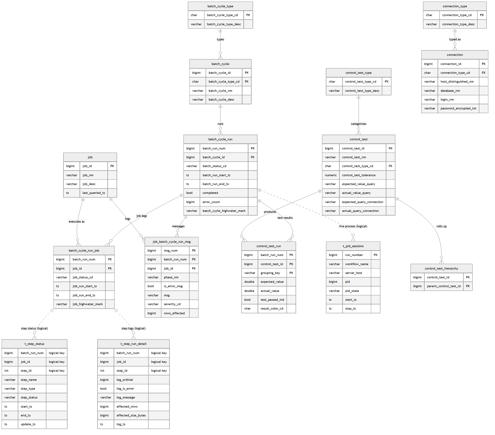

Data Model — the execution spine (column-level)¶
The column-level model of ELTMaestro's core: the execution tables (batch → run → job leg → step), the control-test tables, and the connection anchors. This is the part a warehouse model or a reporting join has to get right.
For the full object inventory (the 72 code-referenced tables + views, by domain, with design-vs-runtime and layer ownership) see DATA-MODEL.md.
Every table also carries the standard audit tail —
create_ts,last_upd_ts,created_by_user(defaultcurrent_user),upd_by_user— omitted from the dictionaries below to keep the meaningful columns legible. Type shorthand:varchar N=character varying(N),char N=character(N),ts=timestamp.
Entity–relationship diagram¶
Solid lines are declared foreign keys in initdb.sql; dashed lines are
logical joins with no enforced FK. On composite keys, members are marked
PK; their FK role is carried by the relationship edge.
The link table
control_test_point(the onlycontrol_test ↔ connectionjoin) is excluded — it has no code reference and is reached only via dynamic SQL, so it is not drawn here. See DATA-MODEL.md → Excluded.

📄 Download the ERD as a PDF (vector, print-friendly).
Diagram source (Mermaid) — edit this and re-render images/data-model-spine.png
erDiagram
batch_cycle_type ||--o{ batch_cycle : "types"
batch_cycle ||--o{ batch_cycle_run : "runs"
batch_cycle_run ||--o{ batch_cycle_run_job : "job legs"
batch_cycle_run ||--o{ job_batch_cycle_run_msg : "messages"
batch_cycle_run ||--o{ control_test_run : "test results"
batch_cycle_run ||..o{ t_pid_sessions : "live process (logical)"
job ||--o{ batch_cycle_run_job : "executes as"
job ||--o{ job_batch_cycle_run_msg : "logs"
batch_cycle_run_job ||..o{ t_step_status : "step status (logical)"
batch_cycle_run_job ||..o{ t_step_run_detail : "step logs (logical)"
control_test_type ||--o{ control_test : "categorizes"
control_test ||--o{ control_test_hierarchy : "rolls up"
control_test ||--o{ control_test_run : "produces"
connection_type ||--o{ connection : "typed as"
batch_cycle_type {
char batch_cycle_type_cd PK
varchar batch_cycle_type_desc
}
batch_cycle {
bigint batch_cycle_id PK
char batch_cycle_type_cd FK
varchar batch_cycle_nm
varchar batch_cycle_desc
}
batch_cycle_run {
bigint batch_run_num PK
bigint batch_cycle_id FK
varchar batch_status_cd
ts batch_run_start_ts
ts batch_run_end_ts
bool completed
bigint error_count
varchar batch_cycle_highwater_mark
}
batch_cycle_run_job {
bigint batch_run_num PK
bigint job_id PK
varchar job_status_cd
ts job_run_start_ts
ts job_run_end_ts
varchar job_highwater_mark
}
job {
bigint job_id PK
varchar job_nm
varchar job_desc
ts last_queried_ts
}
job_batch_cycle_run_msg {
bigint msg_num PK
bigint batch_run_num PK
bigint job_id PK
varchar phase_nm
bool is_error_msg
varchar msg
varchar severity_cd
bigint rows_affected
}
t_step_status {
bigint batch_run_num "logical key"
bigint job_id "logical key"
int step_id "logical key"
varchar step_name
varchar step_type
varchar step_status
ts start_ts
ts end_ts
ts update_ts
}
t_step_run_detail {
bigint batch_run_num "logical key"
bigint job_id "logical key"
int step_id "logical key"
bigint log_ordinal
bool log_is_error
varchar log_message
bigint affected_rows
bigint affected_size_bytes
ts log_ts
}
t_pid_sessions {
bigint run_number PK
varchar workflow_name
varchar server_host
bigint pid
varchar pid_state
ts start_ts
ts stop_ts
}
control_test_type {
char control_test_type_cd PK
varchar control_test_type_desc
}
control_test {
bigint control_test_id PK
varchar control_test_nm
char control_test_type_cd FK
numeric control_test_tolerance
varchar expected_value_query
varchar actual_value_query
varchar expected_query_connection
varchar actual_query_connection
}
control_test_hierarchy {
bigint control_test_id PK
bigint parent_control_test_id PK
}
control_test_run {
bigint batch_run_num PK
bigint control_test_id PK
varchar grouping_key PK
double expected_value
double actual_value
bool test_passed_ind
char result_color_cd
}
connection_type {
char connection_type_cd PK
varchar connection_type_desc
}
connection {
bigint connection_id PK
char connection_type_cd FK
varchar host_distinguished_nm
varchar database_nm
varchar login_nm
varchar password_encrypted_txt
}
D1. Execution — column dictionaries¶
Keys: PK primary key · FK foreign key · LOG logical (unenforced) key.
batch_cycle — batch header (PK batch_cycle_id, seq seq_batch_cycle_id)¶
| Column | Type | Key | Null / default |
|---|---|---|---|
batch_cycle_id |
bigint | PK | NOT NULL |
batch_cycle_type_cd |
char 5 | FK → batch_cycle_type |
— |
batch_cycle_nm |
varchar 255 | — | |
batch_cycle_desc |
varchar 255 | — |
batch_cycle_run — one row per run (PK batch_run_num, seq seq_batch_run_num)¶
| Column | Type | Key | Null / default |
|---|---|---|---|
batch_run_num |
bigint | PK | NOT NULL |
batch_cycle_id |
bigint | FK → batch_cycle |
— |
batch_status_cd |
varchar 12 | NOT NULL | |
batch_run_start_ts |
ts | NOT NULL now() |
|
batch_run_end_ts |
ts | — | |
batch_cycle_data_validity_ts |
ts | now() |
|
batch_cycle_highwater_mark |
varchar 60 | — | |
batch_cycle_lowwater_mark |
varchar 60 | — | |
completed |
bool | NOT NULL false |
|
error_count |
bigint | NOT NULL 0 |
batch_cycle_run_job — job leg within a run (PK (batch_run_num, job_id))¶
| Column | Type | Key | Null / default |
|---|---|---|---|
batch_run_num |
bigint | PK · FK → batch_cycle_run |
NOT NULL |
job_id |
bigint | PK · FK → job |
NOT NULL |
job_status_cd |
varchar 20 | NOT NULL | |
job_run_start_ts |
ts | NOT NULL now() |
|
job_run_end_ts |
ts | — | |
job_highwater_mark / job_lowwater_mark |
varchar 60 | — |
job — job registry (PK job_id, seq seq_job_id)¶
| Column | Type | Key | Null / default |
|---|---|---|---|
job_id |
bigint | PK | NOT NULL |
job_nm |
varchar 80 | NOT NULL | |
job_desc |
varchar 255 | — | |
last_queried_ts |
ts | — |
job_batch_cycle_run_msg — per-run messages (PK (msg_num, batch_run_num, job_id))¶
| Column | Type | Key | Null / default |
|---|---|---|---|
msg_num |
bigint | PK | NOT NULL |
batch_run_num |
bigint | PK · FK → batch_cycle_run |
NOT NULL |
job_id |
bigint | PK · FK → job |
NOT NULL, default 0 |
phase_nm |
varchar 500 | NOT NULL | |
msg |
varchar 4096 | NOT NULL | |
is_error_msg |
bool | NOT NULL false |
|
severity_cd |
varchar 10 | — | |
data_snippet |
varchar 1024 | — | |
phase_id / rows_affected |
bigint | default 0 |
t_step_status — latest status per step (no PK/FK; logical key (batch_run_num, job_id, step_id))¶
| Column | Type | Key | Null / default |
|---|---|---|---|
batch_run_num |
bigint | LOG | NOT NULL |
job_id |
bigint | LOG | NOT NULL |
step_id |
int | LOG | NOT NULL |
step_name |
varchar 128 | NOT NULL | |
step_type |
varchar 128 | NOT NULL | |
step_status |
varchar 64 | NOT NULL | |
start_ts / end_ts |
ts | — | |
create_ts / update_ts |
ts | NOT NULL now() |
t_step_run_detail — per-step log lines (no PK/FK; logical key + log_ordinal)¶
| Column | Type | Key | Null / default |
|---|---|---|---|
batch_run_num / job_id / step_id |
bigint / int | LOG | NOT NULL |
step_name / step_type |
varchar 128 | NOT NULL | |
log_ordinal |
bigint | NOT NULL | |
log_is_error |
bool | NOT NULL false |
|
log_message / log_message_stack |
varchar 65535 | default '' |
|
affected_rows / affected_size_bytes |
bigint | — | |
log_ts |
ts | NOT NULL now() |
t_pid_sessions · t_step_watermark · t_workflow_state_history¶
| Table.Column | Type | Key | Null / default |
|---|---|---|---|
t_pid_sessions.run_number |
bigint | PK | NOT NULL |
t_pid_sessions.pid_state |
varchar 8 | NOT NULL 'ACTIVE' |
|
t_pid_sessions.workflow_name / server_host |
varchar 256 | — | |
t_pid_sessions.pid |
bigint | — | |
t_step_watermark.watermark_name |
varchar 128 | PK | NOT NULL |
t_step_watermark.watermark_value |
varchar 512 | '' · holds full S3 folder path (PushFile) |
|
t_workflow_state_history.(run_seq_number, run_number, job_id) |
bigint | UQ idx | 1-second collision guard — see G8 |
t_workflow_state_history.status_code / status_value |
varchar 32 | — |
D2. Control tests — column dictionaries¶
control_test — test master (PK control_test_id, seq seq_control_test_id)¶
| Column | Type | Key | Null / default |
|---|---|---|---|
control_test_id |
bigint | PK | NOT NULL |
control_test_nm |
varchar 80 | NOT NULL | |
control_test_type_cd |
char 1 | FK → control_test_type |
— |
control_test_category |
varchar 60 | — | |
control_test_tolerance |
numeric(8,2) | — | |
expected_value_query / actual_value_query |
varchar 2000 | — | |
expected_query_connection / actual_query_connection |
varchar 80 | NOT NULL 'DEFAULT' · connection by name |
|
xloc / yloc |
double | 0 · canvas layout |
|
nodecolor |
int | 1 · canvas layout |
control_test_run — result per run (PK (batch_run_num, control_test_id, grouping_key))¶
| Column | Type | Key | Null / default |
|---|---|---|---|
batch_run_num |
bigint | PK · FK → batch_cycle_run |
NOT NULL |
control_test_id |
bigint | PK · FK → control_test |
NOT NULL |
grouping_key |
varchar 160 | PK | NOT NULL '~' |
expected_value / actual_value |
double | — | |
test_passed_ind |
bool | — · pass/fail | |
result_color_cd |
char 1 | — |
control_test_hierarchy · control_test_type¶
control_test_pointis excluded from the model (no code reference, dynamic SQL only) — its columns are omitted here. For reference it keys on(control_test_id, actual_or_expected)with FKs tocontrol_testandconnection; that is the schema's connection-by-id path noted in G5.
| Table.Column | Type | Key | Null / default |
|---|---|---|---|
control_test_hierarchy.control_test_id |
bigint | PK · FK → control_test |
NOT NULL |
control_test_hierarchy.parent_control_test_id |
bigint | PK · FK → control_test (self) |
NOT NULL |
control_test_type.control_test_type_cd |
char 1 | PK | NOT NULL |
D3. Connections & catalog — column dictionaries¶
connection — legacy master (PK connection_id, seq seq_connection_id)¶
| Column | Type | Key | Null / default |
|---|---|---|---|
connection_id |
bigint | PK | NOT NULL |
connection_type_cd |
char 1 | FK → connection_type |
NOT NULL |
host_distinguished_nm |
varchar 80 | NOT NULL | |
database_instance_nm / database_nm |
varchar 128 | — | |
login_nm |
varchar 255 | — | |
password_encrypted_txt |
varchar 255 | — |
t_jdbc — modern JDBC registry (PK connection_id — char(32), not the bigint; no FK to connection)¶
| Column | Type | Key | Null / default |
|---|---|---|---|
connection_id |
char 32 | PK | NOT NULL · hash/UUID, separate namespace |
connection_name |
varchar 128 | NOT NULL | |
connection_string |
varchar 256 | NOT NULL | |
jdbc_driver_name / jdbc_driver_jar |
varchar 128 / 256 | NOT NULL | |
user_name / password64 |
varchar 128 / 256 | NOT NULL · base64 password |
t_connection_general · connection_type · t_job_meta · t_job_meta_history¶
| Table.Column | Type | Key | Null / default |
|---|---|---|---|
t_connection_general.connection_name |
varchar 256 | PK | NOT NULL |
t_connection_general.connection_type_name |
varchar 128 | NOT NULL · type by name | |
t_connection_general.connection_parameters |
varchar 16384 | NOT NULL · param blob (incl. SMTP recipients) | |
connection_type.connection_type_cd |
char 1 | PK | NOT NULL |
t_job_meta.job_name |
varchar 1024 | PK | NOT NULL |
t_job_meta.lock_id |
varchar 512 | '' · edit lock (lock_job fn) |
|
t_job_meta.job_type / job_platform |
varchar 64 | NOT NULL '' |
|
t_job_meta_history.version_key |
bigint | PK | seq seq_job_version_id |
t_job_meta_history.version_path |
varchar 1024 | '' · pointer to the versioned XML file |
D4. DQ metrics — column dictionary¶
metrics.data_quality_metrics — metric rows per run (no declared PK; ordinal = seq_data_quality_metrics)¶
| Column | Type | Key | Null / default |
|---|---|---|---|
run_number / job_id |
bigint | nullable — loose link to the run | |
step_id |
int | nullable | |
step_type |
varchar 64 | — | |
metrics_object |
varchar 256 | — | |
metrics_type |
varchar 32 | Source_Count / Target_Count / … |
|
metrics_key |
varchar 64 | 'none' |
|
metrics_value |
bigint | NOT NULL 0 |
|
ordinal |
bigint | SEQ | NOT NULL nextval(seq) |
D5. Complete foreign-key reference¶
All 15 declared FK constraints in the schema. Everything else joins by convention.
| Child table | Column(s) | References | Constraint |
|---|---|---|---|
batch_cycle |
batch_cycle_type_cd |
batch_cycle_type |
con_fk_batchctype_batchc |
batch_cycle_run |
batch_cycle_id |
batch_cycle |
con_fk_batchc_batchcrun |
batch_cycle_run_job |
batch_run_num |
batch_cycle_run |
con_fk_btchcrun_btchcrunjob |
batch_cycle_run_job |
job_id |
job |
con_fk_job_batchcyclerunjob |
job_batch_cycle_run_msg |
batch_run_num |
batch_cycle_run |
con_fk_bcycrun_jobbcyclernmsg |
job_batch_cycle_run_msg |
job_id |
job |
con_fk_job_batchcyclerunmsg |
connection |
connection_type_cd |
connection_type |
con_fk_conntype_connectiontypecd |
connection2 |
connection_type_cd |
connection_type |
con_fk_conntype_connectiontypecd |
control_test |
control_test_type_cd |
control_test_type |
con_fk_cntrltesttyp_cntrltest |
control_test_point |
control_test_id |
control_test |
con_fk_cntltest_cntltestpoint |
control_test_point |
connection_id |
connection |
con_fk_connection |
control_test_hierarchy |
control_test_id |
control_test |
fk_control_test_hierarchy_control_test |
control_test_hierarchy |
parent_control_test_id |
control_test |
…_control_test22 (self-ref) |
control_test_run |
control_test_id |
control_test |
con_fk_cntltestrun_cntltest |
control_test_run |
batch_run_num |
batch_cycle_run |
fk_control_test_run_batch_cycle_run |
D6. Modeling gotchas¶
Structural facts that will bite anyone writing joins or standing up a warehouse model. Several map directly to bugs already fixed in the client.
G1 — Two connection registries, joined by name not id¶
connection is the legacy master (bigint connection_id, char(1) type
code). t_jdbc is the modern registry but its connection_id is char(32)
(a hash) with no FK to connection, and t_connection_general is
name-keyed with a param blob. Treat "a connection" as two loosely-coupled
worlds bridged by connection_name, never by id.
G2 — The step tables have no keys¶
t_step_status and t_step_run_detail declare neither PK nor FK — keyed only
logically on (batch_run_num, job_id, step_id). Nothing enforces integrity to
the run, so orphan rows persist; this is why deleted steps linger in the
Runtime Status grid (the client fix filters to the live canvas).
G3 — Status is encoded four different ways¶
batch_status_cd varchar(12), job_status_cd varchar(20),
t_step_status.step_status varchar(64), and control tests via
test_passed_ind bool + result_color_cd char(1). No shared status domain or
lookup table — the root of the LogViewer colour-matching brittleness (the
client normalises status to uppercase + substring match to compensate).
G4 — Type-code width drift¶
Single-char discriminators (connection_type_cd, control_test_type_cd =
char(1); batch_cycle_type_cd = char(5)) coexist with name-based typing
(t_connection_general.connection_type_name varchar(128)). Same concept,
three encodings.
G5 — control_test points at connections two ways¶
expected_query_connection / actual_query_connection are varchar(80)
names (default 'DEFAULT'); control_test_point.connection_id is a bigint
FK to connection. One feature, two connection-reference styles.
G6 — metrics.data_quality_metrics is loosely typed¶
Nullable run_number / job_id / step_id, no declared PK (only an
ordinal sequence). Joins back to the run are best-effort — filter out nulls
before aggregating.
G7 — Presentation state lives in data tables¶
control_test.xloc / yloc / nodecolor store canvas layout inside the test
definition — the same designer-state-in-the-model concern as the parked
JobEditor canvas-comment idea.
G8 — t_workflow_state_history has 1-second key resolution¶
run_seq_number is only second-granular, so concurrent runs collide; the
schema adds a unique index on (run_seq_number, run_number, job_id) to stop
state-transition UPDATEs cross-stamping each other. Any model keyed on
run_seq_number alone is wrong.
See also: DATA-MODEL.md (full object inventory) · ENGINE.md (RunBatch, the step DAG, watermarks, halt) · SCHEMA-PROFILE.md (profiling tables).